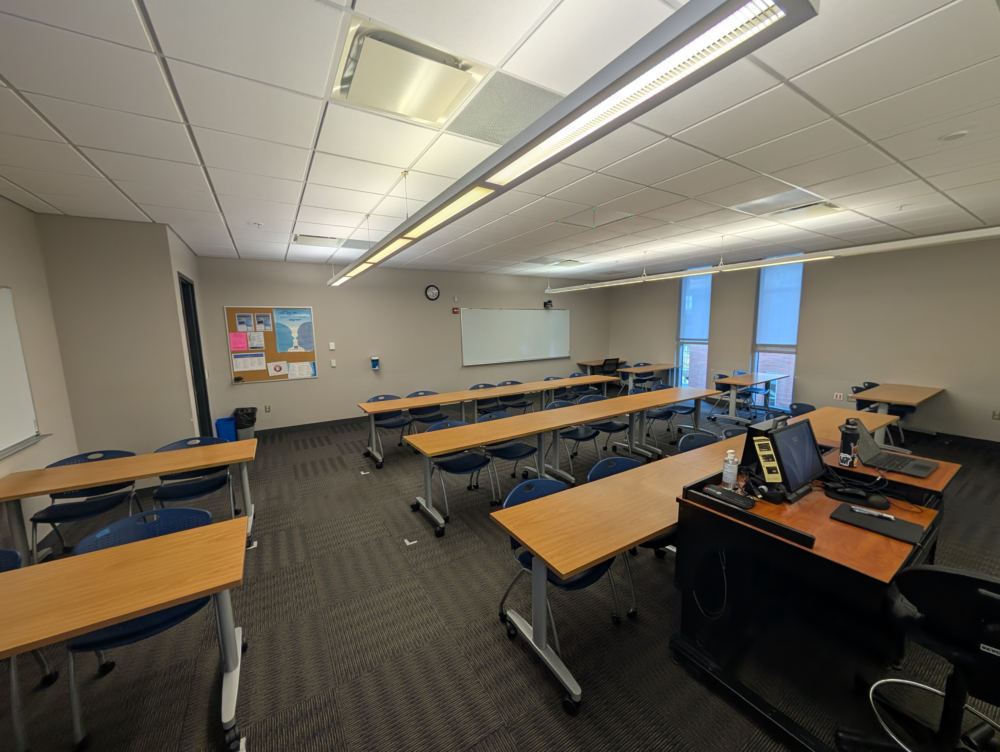
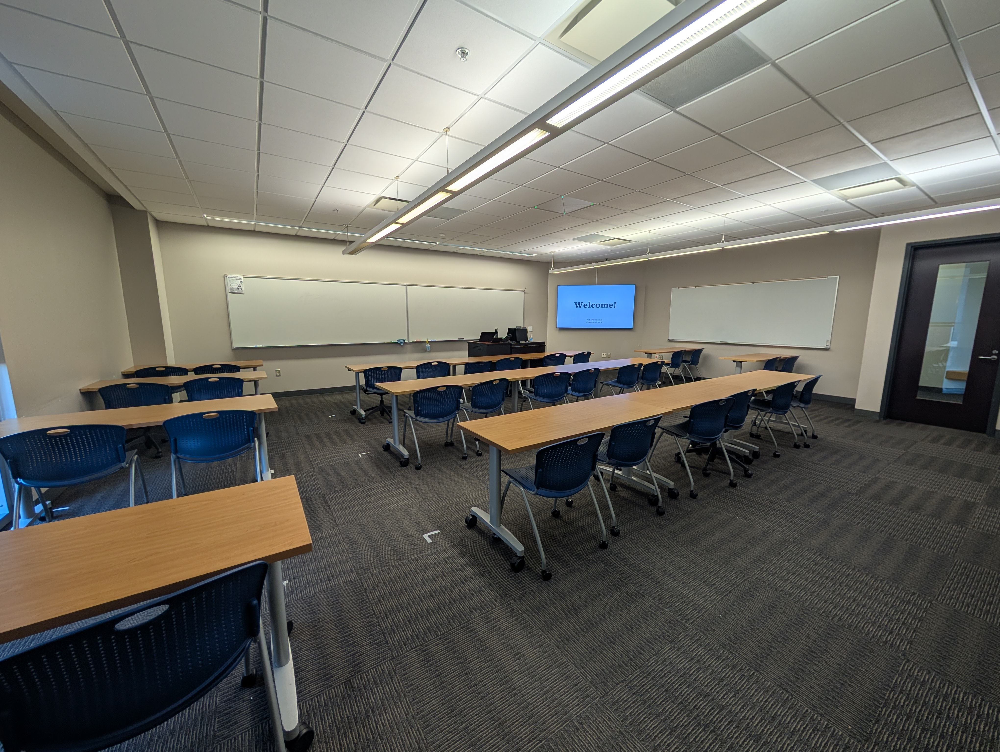

A Return to the Classroom
December 20, 2025
This week marked the completion of my first semester as an adjunct professor at Northampton Community College, the institution where I began my educational journey ten years ago. I had the privilege of teaching two sections of Introduction to Communication—one online and one in-person.
The decision to start teaching
I had been toying with the idea of teaching for a few years, around the time I started graduate school. I have said this before, but I believe every decision I have made in my career, regardless of which way I pivot, has been rooted in a deep love of communicating complex information in uncomplex ways—verbally, written, or through design languages. This same foundation naturally feeds into traditional education.
The decision to teach at Northampton, the same place I both started my educational career as well as revitalized my love of learning, was an easy one. When I first started college after high school, I saw higher education as something I simply had to get through, or hurdle over. It took all but one semester to realize it is also something you can enjoy and get a lot out of beyond the memorization and recitation of facts. At the end of my first semester, I had scrapped together a 1.9 GPA, but also a new driver to prove I could do better. Three years later, I had a 3.5 GPA and graduated from the Honors Program, capped off with a conference presentation on the impact of citizen journalism on the public sphere in the age of trending news—a topic which encapsulated and represented the growth I had achieved as a student. This was in no small part thanks to the tremendous faculty I had, which is why deciding to be among them now as an adjunct was both humbling and an honor.
Looking back at semester one
First, the biggest surprises I encountered:
- Teaching is extremely performative; there is a definite feeling of being "on" which doesn't exist quite the same as giving a keynote or in other public speaking engagements, which actually helps separating the teacher versus personal version of you
- It was easy for me to see my students' grades as an extension of my teaching performance, which was not always the case, especially when it came to missing assignments which holds a lot of personal accountability for the student
- Teaching online was significantly more difficult than in-person teaching, which didn't have the same "performance" aspect of in-person, but did rely much more on getting the message as clear out from the get-go, without the added benefit of instant follow-up questions for clarification as you get in the classroom
Secondly, here are the biggest areas of improvement I need to make heading into the spring semester:
- I had an assignment submission policy more lax than I would have liked, and while it did help the overall grades of my students, it did not enforce the importance of deadlines, which they will see more as they continue with their education
- My in-person class was able to see much more of my personality and passion while teaching, which my online class missed out on and perhaps did not have to
- Going off of above, but keeping the internal note that my students' grades are not necessarily a reflection of my own teaching
Lasty, here are three things I want to carry over into the spring semester:
- Having my students get to know each other early really helped them bond and feel more comfortable presenting and offering feedback, seeing themselves are collaborators and partners in learning rather than just peers
- Going off-script by finding case studies I personally find interesting and exhibiting such passion will be more impressionable for the students, helping them stay attentive and retain the information better
- Keeping in-mind the diversity of students in my classes—high school dual-enrollment, traditional college, and nontraditional adult learners—offering more reminders and personalized emails to assist with navigating their grade and the course overall was appreciated and well-received by them, directly leading to improved grades without sacrificing difficulty in the material
What my students thought, according to their course evaluations
"The feedback given by Professor Careri is the most helpful and genuine out of all the professors I've had. You can tell he actually wants to help you improve rather than giving vague, obligatory feedback."
"I really do feel that taking this class has helped me grow my confidence in the way I communicate and I would not have gotten to this point without Professor Careri's support. He really knows how to engage the class and get the students to practice the communication information that we've learned."
"Professor Careri is hands down the best. You can tell he's passionate about teaching and has a way of engaging with his students that creates a fun atmosphere. He makes the learning process simple and understandable."
Where I go from here
As of right now, I will be teaching two mid-start online sections of Introduction to Communication in the spring. While sixteen weeks offered me the opportunity to navigate the basics of teaching, I still have a lot to learn and look forward to taking these lessons with me.

